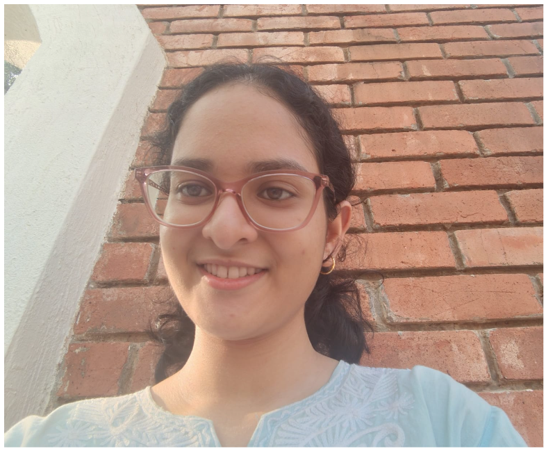

My name is Shirin Moza. I am from Jammu & Kashmir and currently live in Delhi with my family. My mother tongue is Kashmiri. I am a first-year Biotechnology student at MIT Manipal and a member of the MBM Wet Lab Subsystem. I am interested in healthcare, biotechnology, cybersecurity, psychology, and innovation.